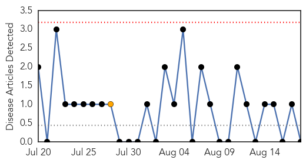
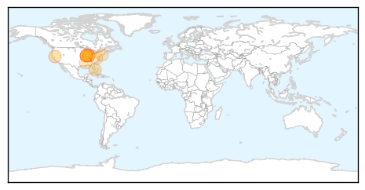

Mold/Fungal
30-Day Web Trend
0 alerts, 1 warnings

30-Day Twitter Trend
0 alerts, 0 warnings

Article Locations


Article Confidences

Top Articles:
-
No articles found for Aug 18, 2015
Top Tweets:
-
No tweets found for Aug 18, 2015
West Nile Virus
30-Day Web Trend
0 alerts, 0 warnings

30-Day Twitter Trend
0 alerts, 0 warnings

Article Locations

Article Confidences

Top Articles:
- 0.995
- Number of human cases of West Nile virus in Butte County hits 30
- 0.974
- Mosquitoes in Metro East test positive for West Nile Virus
- 0.964
- Positive McLean County West Nile cases hits 4; still no human infections reported
- 0.955
- More mosquitoes test positive for West Nile in Metro East
- 0.927
- Indiana sees first human West Nile case of year
- 0.913
- First human case of West Nile virus found in Huntington County
- 0.905
- Indiana’s 1st West Nile human case reported in Huntington
- 0.804
- First 2015 West Nile case in Pinal County reported
- 0.781
- Virginia reports West Nile virus in Orange County horse
- 0.764
- 4 new West Nile virus cases confirmed in Mississippi
- 0.760
- List of towns with West Nile infected mosquitoes grows
Top Tweets:
-
No tweets found for Aug 18, 2015